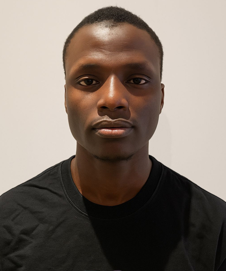

Equipe source du MAC

CISSE Ibrahim
Président fondateur du Mouvement Avenir Citoyen, expert en modélisation et simulation numérique. Il pilote les partenariats institutionnels et les stratégies d’impact national.

BERTHE Lacine
Directeur exécutif du MAC, spécialiste en innovation sociale et inclusion numérique. Elle coordonne les projets jeunesse, genre et engagement communautaire.

CAMARA Karamo
Chargé de l’innovation numérique, ingénieur en systèmes d’information. Il développe les outils digitaux du MAC et supervise les dashboards stratégiques.
Nos partenaires
Le Mouvement Avenir Citoyen collabore avec des acteurs engagés pour renforcer l’impact citoyen, éducatif et numérique en Côte d’Ivoire.